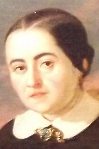

Fernán Caballero

Fernán Caballero
Seudónimo utilizado por Cecilia Böhl de Faber y Larrea
(Morges, Suiza, 24 de diciembre de 1796 – Sevilla, 7 de abril de 1877).
Cecilia Böhl nació en Suiza y tomó su seudónimo de la población de Fernán Caballero (Ciudad Real). Vivió en Alemania hasta que regresó con su familia a Cádiz en 1813. Tras su matrimonio en 1816 se mudó a Puerto Rico y tras la muerte de su esposo, vivió en Hamburgo con su abuela. Años más tarde se mudó nuevamente a El Puerto de Santa María, donde volvió a casrse y envuiudar. El suicidio de su tercer esposo le llevó a la pobreza, aunque posteriormente los duques de Montpensier y la reina Isabel II la protegieron.
Su obra tiene un carácter costumbrista y se distingue por la defensa de las virtudes tradicionales, la monarquía y el catolicismo, con tramas ligeras e ingenuas.
Gustavo Adolfo Bécquer

Adolfo Bécquer
Seudónimo utilizado por Gustavo Adolfo Claudio Domínguez Bastida
(Sevilla, 17 de febrero de 1836 - Madrid, 22 de diciembre de 1870)
Gustavo Adolfo Bécquer fue un poeta y narrador español, perteneciente al movimiento del Romanticismo tardío. Aunque en vida ya alcanzó cierta fama, solo después de su muerte y tras la publicación del conjunto de sus escritos alcanzó el prestigio que hoy se le reconoce.
Su obra más célebre son las Rimas y Leyendas. Los poemas e historias incluidos en esta colección son esenciales para el estudio de la literatura hispana, sobre la que ejercieron posteriormente una gran influencia.
Emilia Pardo Bazán

Pardo Bazán
(La Coruña, 16 de septiembre de 1851 - Madrid, 12 de mayo de 1921)
Emilia Pardo Bazán, condesa de Pardo Bazán, se dio a conocer como escritora con un Estudio crítico de Feijoo (1876) y una colección de poemas, publicados por F. Giner de los Ríos.
Fue una de las principales impulsores del naturalismo en España, aunque de un carácter más conservador que el original de Zola. Su obra maestra es Los pazos de Ulloa (1886), y su continuación La madre naturaleza (1887). Con posterioridad, evolucionó hacia un mayor simbolismo y espiritualismo.
Vicente Blasco Ibáñez

Blasco Ibáñez
(Valencia, 29 de enero de 1867 – Menton, Francia, 28 de enero de 1928)
Vicente Blasco Ibáñez nació en 1867 en Valencia. En su juventud se afilió al movimiento republicano y fue editor del diario antimonárquico El Pueblo. En 1892 publicó su primera novela, La araña negra. Condenado en 1896 a trabajos forzados por sus actividades políticas, posteriormente llegó a ser diputado por el Partido Republicano.
Su primera obra de éxito fue La barraca (1898). Las obras que le dieron un gran éxito internacional fueron Sangre y arena (1908) y Los cuatro jinetes del Apocalipsis (1916), sobre las que se han realizado varias películas.